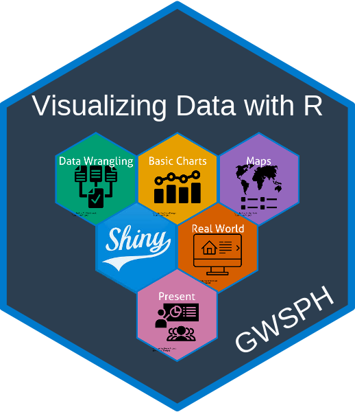

Lecture 4.Introduction to R Shiny
PUBH 6199: Visualizing Data with R, Summer 2025
2025-06-10
Outline for today
- What is R Shiny
- Write a basic R shiny app
- Deploy your Shiny apps with shinyapps.io
- AI-powered help: using Shiny Assistant
About R Shiny
- Shiny is an R package that makes it easy to build interactive web applications (apps) straight from R
- Shiny allows users to build dynamic, data-driven web apps without requiring extensive knowledge of web development
- To install R Shiny run the following command in the console of your RStudio
install.packages("shiny")

Key Features
- Interactive Web Applications: Shiny makes web apps that respond to user inputs
- Seamless Integration with R: Users can leverage the full power of R, like data manipulation, statistical modeling, and plotting
- Easy Deployment using Shiny Cloud
- Extensibility: Shiny apps can be enhanced with custom HTML, CSS, and JavaScript
Basic Structure Shiny Application
A typical Shiny application has two main components:
User Interface (UI): Defines the layout and appearance of the app, including input controls (like sliders and text boxes) and output displays (like plots and tables).
Server Function: Contains the logic that processes inputs and generates outputs. It reacts to user interactions
Visual Logic
- Here we can see the visual logic behind a Shiny application
*Input(), *Output() and render*()
These three groups of functions are the core of Shiny’s reactive programming model:
*Input(): Represents user inputs, such as text input, slider input, or checkbox input. For example,input$sliderValueretrieves the value of a slider input with the ID “sliderValue”.*Output(): Represents outputs that are displayed in the UI, such as plots, tables, or text. For example,output$histPlotrefers to a plot output with the ID “histPlot”.render*(): Functions that generate outputs based on inputs. For example,renderPlot()creates a plot output, andrenderText()generates text output. These functions are reactive and will automatically update when the inputs change.
*Input() function syntax
Shiny input functions: sliderInput(), selectInput(), textInput() numericInput(), etc.
General format:
inputId: connects UI and server viainput$inputId, must be a simple string without spaces, must be unique within the applabel: text label for the input control, displayed in the UIvalue: initial value of the input control, can be a number, character, or logical value. For example:
Different types of UI Inputs

*Output() function syntax
Shiny output functions: plotOutput(), tableOutput(), textOutput(), etc.
What *Output() function does:
- Output functions in the UI create placeholders.
- These placeholders are filled by the server using a matching
render*()function.
General format:
outputId: connects UI and server viaoutput$outputId, must be a simple string without spaces, must be unique within the app. For example:
- Accessed in server as:
Output <-> Render pairing

Outline for today
- What is R Shiny
- Write a basic R shiny app
- Deploy your Shiny apps with shinyapps.io
- AI-powered help: using Shiny Assistant
Setting up a shiny app
- Create a GitHub repo and clone the repo to our computer
- Install R Shiny in your R environment :
install.packages("shiny") - Organize repo structure
Two options for shiny apps

- Single-File App: All code is in one file, typically named
app.R. This is suitable for simple applications or creating a reprex example.
- Two-File App: Code is split into multiple files, usually
ui.Rfor the user interface andserver.Rfor the server logic. Optionally,global.Rcan be used for data ingestion and wrangling. This is better for larger applications.
Create a single-file Shiny app
- Create a new R script file named
app.R - The file should contain both the UI and server components
- The basic structure of a single-file Shiny app is as follows:
Once you have this structure, RStudio recognize this is a R shiny app and you can run the app by clicking the “Run App” button in RStudio.
Let’s build the app step-by-step
- We will create a simple Shiny app that displays a histogram of random normal data
- The app has a title and subtitle
- Users can adjust the number of bins in the histogram using a slider input
- The histogram will react to the slider input and update accordingly
Code Breakdown UI
Calling the library
Define the User Interface (UI) of the app, consisting of a title, a subtitle, a slider input, and a plot output
Click Run App, what do you see? what is different from what you imagined?
UI Work-in-Progress

There is no distinction between title and subtitle
There is no plot
Adding hierarchy to the text
Plot placeholder is present
When developing with R shiny, it is recommended that you use Google Chrome browser, and learn how to inspect html pages by right-clicking on the page and selecting “Inspect” or pressing Ctrl + Shift + I (Windows/Linux) or Cmd + Option + I (Mac).
But the plot is not there yet, we need to add the server logic to create the plot.
Code Breakdown: Server
Server takes the inputs and create a reactive chart
server <- function(input, output) {
output$histPlot <- renderPlot({
# Generate random data
data <- rnorm(500)
# Create histogram with user-specified bins
hist(data, breaks = 30, col = "skyblue",
border = "white", main = "Histogram of Random Normal Data",
xlab = "Value", ylab = "Frequency")
})
}
shinyApp(ui = ui, server = server)Running the App
- Save the code to an R script file, e.g., app.R.
- In your R console, run
shiny::runApp("app.R")
How to make it reactive?
This will not react to user input because the number of bins is always 30.
server <- function(input, output) {
output$histPlot <- renderPlot({
# Generate random data
data <- rnorm(500)
# Create histogram with user-specified bins
hist(data, breaks = 30, col = "skyblue",
border = "white", main = "Histogram of Random Normal Data",
xlab = "Value", ylab = "Frequency")
})
}
shinyApp(ui = ui, server = server)This takes in user input and uses it to create a histogram with the specified number of bins.
server <- function(input, output) {
output$histPlot <- renderPlot({
# Generate random data
data <- rnorm(500)
# Create histogram with user-specified bins
hist(data, breaks = input$bins, col = "skyblue",
border = "white", main = "Histogram of Random Normal Data",
xlab = "Value", ylab = "Frequency")
})
}
shinyApp(ui = ui, server = server)This is what we have now
ui <- fluidPage(
# app title
h1("Histogram Example"),
# app subtitle
h4(strong("Choose a number of bins to update the histogram")),
# slider input
sliderInput("bins",
"Number of bins:",
min = 5, max = 50, value = 30),
# histogram output
plotOutput("histPlot")
)
# Server
server <- function(input, output) {
output$histPlot <- renderPlot({
# Generate random data
data <- rnorm(500)
# Create histogram with user-specified bins
hist(data, breaks = input$bins, col = "skyblue",
border = "white", main = "Histogram of Random Normal Data",
xlab = "Value", ylab = "Frequency")
})
}
# Run the app
shinyApp(ui = ui, server = server)Adding visual structures
ui <- fluidPage(
titlePanel("Histogram Example"),
h4(strong("Choose a number of bins to update the histogram")),
sidebarLayout(
sidebarPanel(
sliderInput("bins",
"Number of bins:",
min = 5, max = 50, value = 30)
),
mainPanel(
plotOutput("histPlot")
)
)
)
# Server
server <- function(input, output) {
output$histPlot <- renderPlot({
# Generate random data
data <- rnorm(500)
# Create histogram with user-specified bins
hist(data, breaks = input$bins, col = "skyblue",
border = "white", main = "Histogram of Random Normal Data",
xlab = "Value", ylab = "Frequency")
})
}
# Run the app
shinyApp(ui = ui, server = server)
In-Class Activity:
Add a second slider input so that the app reacts to the number of random data points generated for the histogram.
10:00
Finished app with two slider inputs

Two-file shiny app with a dataset
In this tutorial, we will build an interactive R Shiny application step-by-step. Our app will:
- Display a scatter plot using the
mtcarsdataset - Allow users to choose x-axis and y-axis variables
- Enable plot color customization by a third variable
- Label points with car names
global.R: load libraries, clean data
library(shiny)
library(ggplot2)
library(dplyr)
# Data wrangling: Add a car name column and factor variables
mtcars_clean <- mtcars %>%
tibble::rownames_to_column("car") %>%
mutate(
cyl = as.factor(cyl),
gear = as.factor(gear)
)
glimpse(mtcars_clean)Rows: 32
Columns: 12
$ car <chr> "Mazda RX4", "Mazda RX4 Wag", "Datsun 710", "Hornet 4 Drive", "Ho…
$ mpg <dbl> 21.0, 21.0, 22.8, 21.4, 18.7, 18.1, 14.3, 24.4, 22.8, 19.2, 17.8,…
$ cyl <fct> 6, 6, 4, 6, 8, 6, 8, 4, 4, 6, 6, 8, 8, 8, 8, 8, 8, 4, 4, 4, 4, 8,…
$ disp <dbl> 160.0, 160.0, 108.0, 258.0, 360.0, 225.0, 360.0, 146.7, 140.8, 16…
$ hp <dbl> 110, 110, 93, 110, 175, 105, 245, 62, 95, 123, 123, 180, 180, 180…
$ drat <dbl> 3.90, 3.90, 3.85, 3.08, 3.15, 2.76, 3.21, 3.69, 3.92, 3.92, 3.92,…
$ wt <dbl> 2.620, 2.875, 2.320, 3.215, 3.440, 3.460, 3.570, 3.190, 3.150, 3.…
$ qsec <dbl> 16.46, 17.02, 18.61, 19.44, 17.02, 20.22, 15.84, 20.00, 22.90, 18…
$ vs <dbl> 0, 0, 1, 1, 0, 1, 0, 1, 1, 1, 1, 0, 0, 0, 0, 0, 0, 1, 1, 1, 1, 0,…
$ am <dbl> 1, 1, 1, 0, 0, 0, 0, 0, 0, 0, 0, 0, 0, 0, 0, 0, 0, 1, 1, 1, 0, 0,…
$ gear <fct> 4, 4, 4, 3, 3, 3, 3, 4, 4, 4, 4, 3, 3, 3, 3, 3, 3, 4, 4, 4, 3, 3,…
$ carb <dbl> 4, 4, 1, 1, 2, 1, 4, 2, 2, 4, 4, 3, 3, 3, 4, 4, 4, 1, 2, 1, 1, 2,…ui.R: define user interface
ui <- fluidPage(
titlePanel("Interactive Scatter Plot - mtcars"),
sidebarLayout(
sidebarPanel(
selectInput("xvar", "Choose X-axis variable:", choices = names(mtcars), selected = "wt"),
selectInput("yvar", "Choose Y-axis variable:", choices = names(mtcars), selected = "mpg"),
selectInput("colorvar", "Choose color variable:", choices = names(mtcars), selected = "cyl"),
),
mainPanel(
plotOutput("scatterPlot")
)
)
)Intermediate step: make ggplot in scratch.R
This is not a must but highly recommend, you can test out your ggplot code in a separate R script file, e.g., scratch.R, before integrating it into the Shiny app.
server.R: adapt regular ggplot code
scratch.R
- Regular ggplot code for scatter plot
- x-axis is wt
- y-axis is mpg
- color by cyl
- label points with car names
server.R
server <- function(input, output) {
# Render the plot
output$scatterPlot <- renderPlot({
ggplot(mtcars_clean, aes_string(x = input$xvar, y = input$yvar)) +
geom_point(aes_string(color = input$colorvar), size = 3) +
geom_text(aes(label = car), vjust = -1, size = 3) +
theme_minimal() +
labs(title = paste("Scatter Plot of", input$yvar, "vs", input$xvar),
x = input$xvar, y = input$yvar)
})
}- Adapt the ggplot code to use
aes_string()for dynamic variable selection - Use
input$xvar,input$yvar, andinput$colorvarto make the plot reactive
Run the two-file Shiny app
No need for shinyApp(ui = ui, server = server) when you have two-file app structure:
- Save the
ui.Randserver.Rfiles in the same directory - Shiny automatically stitch them together, and optionally look for
global.R. - In RStudio, click the Run App button
Outline for today
- What is R Shiny
- Write a basic R shiny app
- Deploy your Shiny apps with shinyapps.io
- AI-powered help: using Shiny Assistant
Why shinyapps.io?
- Free: Free tier available for up to 5 small apps
- Easy to use: No need to set up a server or manage infrastructure
- Scalable: Can handle apps of varying sizes and complexities
- Integration with RStudio: Seamless deployment from RStudio IDE
Getting started with shinyapps.io
- Create an account on shinyapps.io
- Recommended to log in using GitHub
- Install the
rsconnectpackage in R:install.packages("rsconnect") - Following the instructions on the shinyapps.io to authorize your account
Deploy your app to shinyapps.io
- In RStudio, open the app you want to deploy
- Click on the Publish button in the top right corner of the RStudio IDE
- Select the shinyapps.io account you just connected
- Fill in the app name and description
- Click Publish to deploy your app
- Once deployed, a browser will open to your application.
https://{your-username}.shinyapps.io/{your-app-directory-name} - You should see a
rsconnect/folder within your app directory, which contains the deployment information. This should be added and committed into version control (i.e. push it to GitHub)
shinyapps.io dashboard
Dashboard provides an overview of your deployed apps, including: app name and URL, deployment status, usage statistics (e.g., number of active users, CPU usage)
Check out shinyapps.io user guide for more information on hosting your app!
Outline for today
- What is R Shiny
- Write a basic R shiny app
- Deploy your Shiny apps with shinyapps.io
- AI-powered help: using Shiny Assistant
What is Shiny Assistant?
Use Shiny Assistant to recreate the two-file shiny app
Prompt: Create a shiny app using the mtcars dataset. Use three files global.R, ui.R, server.R. The app displays an interactive scatter plot that reacts to user input of x-axis, y-axis, and a third variable for color of the points. Show car name as label text next to the points.
Next, let’s build a shinydashboard
The
{shinydashboard}package provides a framework for building dashboards in R Shiny. It allows you to create visually appealing and interactive apps with a more classic “dashboard” layout, including sidebars, tabs, and boxes. You need both packages:{shiny}and{shinydashboard}.

Use Shiny Assistant to create a shinydashboard
Prompt: Create a shinydashboard using the mtcars dataset. Use three files global.R, ui.R, server.R. The app allows users to filter by mpg and displays three output: an interactive scatter plot that reacts to user input of x-axis, y-axis, and color variable. A heatmap of car performance. And a data table of the filtered dataset. Show car name as label text next to the points in the scatter plot.
Refine the app locally
- Download the code from Shiny Assistant
- Save the files in your local R project directory, remember to organize your repo structure well
- Open the files in RStudio and run the app locally
- Make any necessary adjustments to the code
Your turn in hw4
Try one of these built-in datasets to explore with Shiny Assistant
| Dataset | Description |
|---|---|
mtcars 🚗 |
Car performance data (mpg, cylinders, hp) |
iris 🌸 |
Iris flower measurements (sepal, petal, species) |
diamonds 💎 |
Diamond pricing (carat, cut, price, etc.) |
faithful 🌋 |
Old Faithful geyser eruptions (duration, waiting time) |
airquality 🌍 |
New York air quality data (Ozone, Temp, Wind) |
ToothGrowth 🦷 |
Vitamin C & tooth growth in guinea pigs |
Or upload your own dataset to GitHub and give Shiny Assistant a public URL!
Write good prompt, and you will get good code!
Describe what change you made to the app on top of what Shiny Assistant generated.
Further resources
How much time do you have?
- 10 min: Print out this Shiny for R cheatsheet
- 2.5 hrs: Follow this Posit tutorial
- Lifetime: Check out resources like the
Shiny Gallery,TidyTuesday, andMastering Shinybook - Unknown: chatGPT, Gemini, Shiny Assistant (powered by Anthropic), and other AI tools can help you build Shiny apps
End-of-Class Survey
Fill out the end-of-class survey
~ This is the end of Lecture 4 ~
10:00

PUBH 6199: Visualizing Data with R